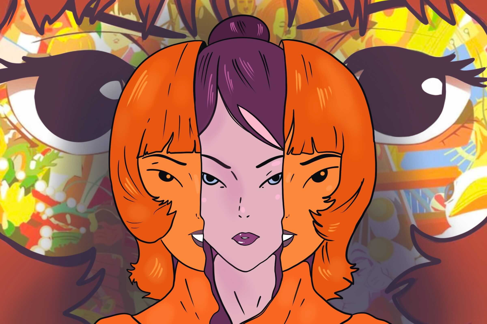
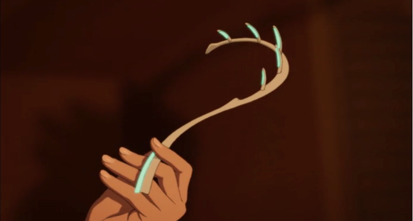

Film Synopsis

Image depicts the split of Dr. Chiba Atsuko and Paprika
Paprika is a trippy and surrealist movie about a team of doctors working on a device known as the DC Mini, that allows them to enter the subconscious mind of their psychiatric patients. Dr. Chiba Atsuko, the genius behind the DC mini is able to transform into Paprika, a dream detective in the dream realm. When the DC mini gets stolen, dreams and nightmares start to melt into reality.

Image of the DC Mini
My favorite quotes
"Science is nothing but a piece of trash in front of a profound dream."
“...the Internet and dreams are similar. They're areas where the repressed conscious mind escapes.”
"An overweight spirit needs no diet!"